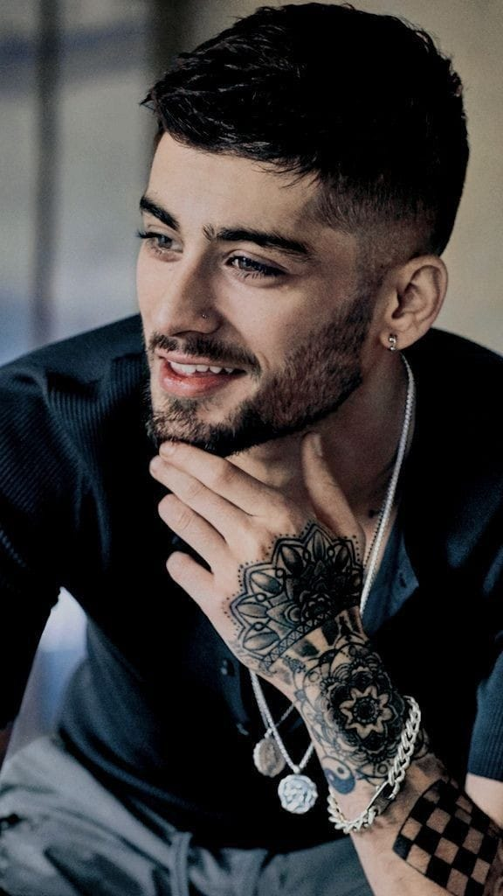

HARRY STYLES
Harry Edward Styles es un cantante, compositor y actor que nació el 1 de Febrero de 1994 en Holmes Chapel, Cheshire, Reino Unido. Antes de One Direction, tenía una banda en la escuela denominada "White Eskimo" que luego se separaron cuando Harry quedó elegido en "The X Factor". En 2016 crea su propio sello discográfico, "Erskine Records" y se retiró de "Modest Management" que representaba a One Direction. Un año después, lanzó su primer sencillo como solista "Sign of the Times" que forma parte de su álbum debut con su mismo nombre junto a "Two Ghosts" y "Kiwi". Siguiendo por 2019, estrenó su segundo disco llamado "Fine Line" donde se encuentran canciones como "Lights Up", "Adore You", "Falling", "Watermelon Sugar" (Ganador de un Grammy Awards en 2021) , "Golden" y "Treat People with Kindness". Para el 20 de Mayo de este año, Styles estrenó su tercer disco "Harry's House" -foto superior derecha- (Que hasta el momento tiene un solo sencillo, "As It Was").
LOUIS TOMLINSON
Louis William Tomlinson nació en Doncaster, Reino Unido, el 24 de Diciembre de 1991 con el nombre Louis Troy Austin. Es un cantante y compositor que, cuando empezó la pausa indefinida de One Direcion, fue el inicio de su carrera como solista. Fue un juez invitado en "The X Factor" en 2015 y en esa época creó su sello discográfico llamado "Triple Strings Ltd". Su primera canción "Just Hold On" en colaboración con Steve Aoki se estrenó a fines de 2016 y durante 2017 lanzó "Back to You" (Con Bebe Rexha y Digital Farm Animals), "Just Like You" y "Miss You". En 2018 volvió a "The X Factor" como juez y en 2019 estrenó dos canciones: "Two of Us" y "Kill My Mind". Y finalmente el 31 de Enero de 2020 lanza su primer y único álbum hasta la fecha llamado "Walls".
NIALL HORAN

Niall James Horan nació el 13 de Septiembre de 1993 en Mullingar, Irlanda y es un cantante y compositor. A comienzos de 2010, participó en un concurso llamado "Academy 2" y ese mismo año es cuando audiciona en "The X Factor" y queda para One Direction. En 2016 firmó un contrato para arrancar como solista en "Capitol Records" y lanza su primera canción: "This Town". En 2017, estrenó su álbum "Flicker" que incluye también dos sencillos que son "Slow Hands" y "Too Much to Ask". Dos años después, volvió a la música con "Nice to Meet Ya" y en Febrero del 2020 con "No Judgment". Finalizando, el 13 de Marzo de ese mismo año salió "Heartbreak Weather", su segundo disco.
LIAM PAYNE
Liam James Payne es un cantante, compositor y guitarrista que nació el 29 de Agosto de 1993 en Wolverhampton, Reino Unido. Audicionó por primera vez en "The X Factor" en 2008, pero fue eliminado en la última ronda ya que era muy joven. Dos años después, volvió a audicionar y quedó. Para el año 2016, firmó un contrato discográfico con "Capitol Records" para el comienzo de su carrera solista y en 2017 lanzó "Strip That Down" (en colaboración con Quavo), "Bedroom Floor" y "Get Low". Al siguiente año estrenó dos canciones más: "For You" (con Rita Ora), "Familiar" (junto con J Balvin) y colaboró en "Polaroid" de Jonas Blue junto a Lennon Stella. Continuando en 2019, lanzó "Stack It Up" con A Boggie wit da Hoodie y "Live Forever" con Cheat Codes y en Diciembre de ese año salió su primer y único album "LP1".
ZAYN MALIK


Zain Javadd Malik nació el 12 de Enero de 1993 en Bradford,Reino Unido y es cantante y compositor. El 25 de Marzo 2015 es el día que se retiró oficialmente de One Direction y siguió su carrera musical individualmente. Tiene tres álbumes: comenzando con "Mind Of Mine" que salió en 2016 y tiene sencillos como "Pillowtalk", "Like I Would", "It's You" y "Befour". En 2018 sale su segundo disco llamado "Icarus Falls" con varios sencillos que son "Let Me", "Entertainer", "Sour Diesel", "Too Much" (con Timbaland), "Fingers", "No Candle No Light" (junto a Nicki Minaj) y "Dusk Till Dawn" (feat. Sia). Por último, se estrenó a principios del 2021 su tercer álbum "Nobody Is Listening" que incluye "Better" y "Vibez".